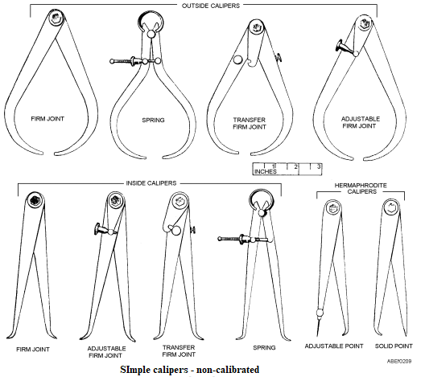
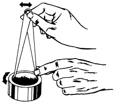
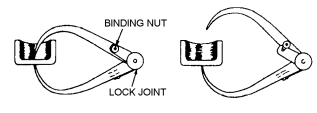
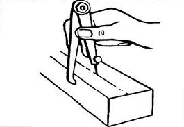
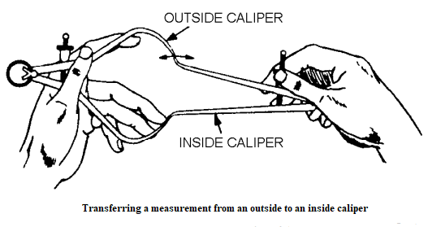
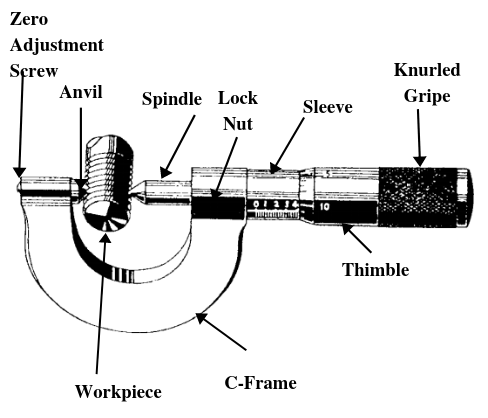

Chapter 4: Pipe Threading to Dimension¶
Fixing pipe to pipe vice¶
A pipe vise is an apparatus which enables a pipe to be held tightly for different jobs like cutting, threading or welding. To fix the pipe to pipe vice you should follow the following steps carefully:
- Step1: Preparation
Find the flat and levelled surface like high worktable to place the pipe vice. Attach pipe vice firmly in the edge of worktable, so that you have more space to work with.
- Step 2: Opening the pipe vice
If T-handle at the top is screwed all the way down, then loosen it by turning it counter-clockwise. After that, open up the teeth in the middle where the pipe will go. Now, lift the lever to open the pipe vise sideways where pipe will be installed.
- Step 3: Insert the pipe
Insert the pipe into the slot in the middle, setting it on the curved base.
- Step 4: Secure the pipe
Finally, close the lever on the side and tighten the T-handle on top which locks the pipe firmly. After pipe vise is secure make sure that the pipe level is not misaligned.
Measuring pipe to millimeter¶
While performing maintenance and repair tasks in plumbing system, you must take accurate measurements during inspection, to determine the remaining service life of particular item or to make replacements according to required standard.
Outside pipe diameters¶
It is necessary to know how to take this measurement because outer diameter is only given sometimes in pipe specifications.
To measure outside diameter of a pipe, you should use rigid rule like wooden rule as shown in figure below.
Place the scale above the pipe with one end as stop using thumb as in figure.
Then, swing the rule through the arc with one end at your thumb and take maximum reading at the other side of the pipe.
Inside pipe diameters¶
You must hold the rule by just resting one end or rule in one side of the pipe as shown in figure.
Then, with one end held in place, swing the rule through the arc and take maximum reading of diameter across the inside distance.
This measurement is satisfactory for appropriate inside measurement.
Pipe circumferences¶
Take a flexible type of rule (or string that will be later matched to any rule) that will conform to the shape of pipe.
Remove labeling or other material wrapped around the pipe.
Wrap the tape squarely around the axis of the pipe to ensure that the measurement will not be more than the main body of the rule as shown in given figure
Read the measurement in the tape.
Once you have found the circumference, use the chart below to find your pipe size
- For copper pipe or PEX tubing
Copper pipe or PEX tubing sizes¶2.5” (70 mm) :
3/4″ pipe
3.53″ (90mm) :
1″ pipe
4.32″ (110mm) :
1 1/4″ pipe
5.10″ (130mm) :
1 1/2″ pipe
- For Steel pipe or PVC plastic pipe
Steel pipe or PVC plastic pipe sizes¶3.25” (83 mm) :
3/4″ pipe
4.00″ (102 mm) :
1″ pipe
5.00″ (127mm) :
1 1/4″ pipe
6.00″ (150mm) :
1 1/2″ pipe
- For Polyethylene pipe
Polyethylene pipe sizes¶2.96-3.33” (70-85 mm) :
3/4″ pipe
3.74-4.24″ (95-108mm) :
1″ pipe
4.90-5.57″ (124-141mm) :
1 1/4″ pipe
5.70-6.28″ (145-160mm) :
1 1/2″ pipe
Length of pipe¶
- To measure the normal length of any pipe you can use tape rule or steel tape.
Place the hook tab on one end of pipe as grip and stretch the tape.
Pull out the tape or rule over the pipe parallel to it and read the measurement carefully.
Figure 4-1. Measuring the diameter of a pipe¶
Measuring methods¶
Where exact measurements are required, use a micrometer caliper which allow you to measure within one ten-thousandth (0.0001) of an inch accurately. Similarly, when extreme preciseness is not main concern, a common tape rule will do most. Some measuring methods are given below:
1) Using common rule or thread¶
To measure with common rule, hold the rule with its edge on the surface of the object to be measured which will eliminate parallax and other errors. Read the measurement at the graduation that coincides with the distance to be measured.
2) Using caliper¶
A caliper helps to measure the distance between two opposite sides of an object. With the help of caliper, you can directly measure the diameter of pipe. It can be used in two different ways. Either the caliper is set to the dimension of the work or pipe and the dimension is transferred to a scale, or the caliper is set on a scale and work or pipe is machined until it matches with the dimension set up on the caliper. You should not use caliper to measure a work that is revolving in a machine.Figure 4-2a. Calipers¶
Inside caliper measure the distance between two surfaces as well as internal size of an object. For instance, it is used to measure internal diameter of a pipe.
Outside caliper measures the dimension which are inaccessible. For instance, to measure the thickness of the bottom of a cup outside caliper is used.
Hermaphrodite caliper or oddleg caliper has one leg bent inward and one straight leg ending in a sharp point. It is used for scribing lines at a specified distance from a flat or curved surface.

We can even combine various inside and outside as per the requirements. For example, a combination of firm-joint caliper. Similarly, we can use digital caliber for precise measurements. Vernier caliper, dial caliber and micrometer caliper are also available for our various jobs.Transferring measurements from one caliper to another
To transfer the measurement from one spring caliper to another follow the following steps:
a) Hold the caliper as shown in figure given below.b) Carefully adjust the size of caliber so that the two-lower leg of one caliber is extended to contact with the other steady caliber’s legs.c) Calibers should be held lightly. If there is a slight drag, then caliber is not at handled properly.d) Figure shown below is the measurement transfer instance from outside caliper to an inside caliper. Left hand holds the outside caliper firmly while right hand changes the size of inside caliper until legs of the opposite caliper meets exactly as in figure.
3) Using micrometer¶
It is also an caliper and is commonly called as micrometers or simply mikes mostly used where preciseness is main concern like military, industries and research. There are three types of micrometer: inside micrometer, outside micrometer and the depth micrometer. Outside micrometer measures outside dimension, inside micrometer measures inside diameter of a cylinder or a hole and depth diameter measures the depth of a hole or recess. Figure given below shows a micrometer with its components. Procedure of measuring cylindrical works is not in the scope of this book.
Figure 4-3. A micrometer¶
Die holding/threading methods¶
A die set is used to cut threads onto a cylindrical like bolt with male threads. Following are the steps to be followed while holding the die
Choose the die according to your requirement: solid dies cut nominal thread form and depth while adjustable dies is used for achieving different classes of thread.
Rod or workpiece should be of correct diameter for perfect threading which should be either slightly smaller or slightly bigger than die.
Now, place the die inside the space in diestock with great care.
A pipe thread is a spiral ridge on the end of a pipe which enables pipes to be joined together. There are two pipe threading standards and they are:
The British Standard Pipe Thread (BSP)
The American National Thread (NPT)
Also, there are pipe threading equipment which are required for threading process which are:
Hand held threading handleThreading dies and tapsHand held threading machineThreading oilsSealing tapeThreading sealants(used for sealing threaded joints.)
Tap and die are tools used for screw threads. Tap is used to for female threads while taps are used to form male threads. There are different ways of making threads like metal cutting, molding and rolling as shown in figure below.
{kind=link}
Following are the methods for creating threads in metal workpiece:
1. Using dies
a) Determine the number of threads per inch (TPI) required and select the dies accordingly.b) Select the hard-enough dies for the metal you are trying to work with.c) Check the die in diestock, if it is not in fit condition (i.e. wear out) replace it with another die else continue.d) Lubricate the threading workpiece or cylindrical rod with light machine oil to prevent dies from becoming overheated.e) Place the workpiece into a vise to hold it firmly so that it won’t rotate when diestock is turned over it.f) Place the die over the workpiece and hold it horizontally.g) Press steadily on the front of the die head and turn it slowly.h) Turn the handle of the die clockwise half a turn at a time, and then back it off a bit in order to eject the metal chips.i) Apply the machine oil or threading oil while threading.j) Ensure that the die is always kept perpendicular to the pipe to ensure the thread is even and square.k) After the dies have been run down the required length of thread, reverse the die head in opposite direction carefully so that threads are not damaged.l) Remove the pipe from the vice, stand it on the end and tap to remove unnecessary metal chips from pipe.m) Clean the pipe with cloth or soft rag to remove oil with care since thread are sharp.n) Clean the die and diestock after use so that oil and metal do not damage machine for future use.
{kind=link}
2. Using taps
a) Determine the number of threads per inch (TPI) required and select the taps accordingly.b) Select the hard-enough taps for the metal you are trying to work with.c) Select the tap wrench according to tap you are using. While using a small tap, try to obtain and use a corresponding small tap wrench.d) Check the tap in tap wrench, if it is not in fit condition (i.e. wear out) replace it with another tap otherwise continue.e) Mount your workpiece firmly in vice.f) You should make sure you can invert your workpiece easily to remove chips.g) Drill the straight hole in the correct diameter and avoid lateral force.h) Lubricate while threading by applying the machine oil or threading oil.i) Back off regularly to release chips.j) Proceed slowly and calmly.k) After the taper have been run down the required length of thread, reverse the tap head in opposite direction carefully so that threads are not damaged.l) Remove the pipe from the vice, stand it on the end and tap to remove unnecessary metal chips from pipe.m) Insert the correct size reamer inside the pipe to ensure any sharp burrs are removed from inside of the pipe.n) Clean the pipe with cloth or soft rag to remove oil with care since thread are sharp.o) Clean the tap and tap wrench after use so that oil and metal do not damage machine for future use.
Figure 4-4 a) Tapping process¶
{kind=link}
- There are various methods and applications for making threads which are
Thread turningThread millingThread tappingThread whirlingGrinding
Die checking/cleaning/oiling¶
Before operating on pipe and after the completion of job threading die should be checked carefully for iron chips which could damage the life of die in long run. And, ensure that die is hold tight in diestock.
Cleaning should be done while threading by inverting the workpiece to drop the waste particles. And more importantly, once threading is done in workpiece, take a soft cloth and remove the lubricant from the pipe. Be careful while doing so since the freshly cut threads are sharp.
Suitable lubricant is essential for tapping and threading operations for following reasons:
To keep threading dies or taps and the workpiece at a stable temperature which improves thread quality.
Maximize the life of dies and taps by lubricating the working edge and reducing die ware.
Reduces threading torque and speeds the metal removal process.
Prevents machined or newly made threads and threading dies/tapes from rust.
For example, petroleum based is used for steel and aluminum.
Die tightening and loosing/fixing cutter¶
Die nuts, also known as rethreading dies, are dies made for cleaning up damaged threads. Chasing is the process of repairing damaged threads.
Warning
Not available
Checking accurate threading and its sharpness¶
In order to maintain the dimension of threaded workpiece within the specified size, tools used, and process applied like lubrications and sharpness of cutting edges are essential. The fundamental factors which controls the accuracy of thread are as follows:
- Angle:
The
anglebetween of thread is the angle included between the sides of the thread, measured in an axial plane.
- Half angle of thread:
The angle included between side of the thread and the normal (90 degrees), measured in an axial plane.
- Lead:
The distance a screw thread advances axially in one turn.
- Major diameter:
The largest diameter of the thread of the screw or nut.
- Minor diameter:
The smallest diameter of the thread of the screw or nut.
- Pitch diameter:
It is known by checking the reference table for the proper pitch diameter limits for the desired fit.
Thread form by the form and position of the tool.
Note
The number of threads per inch of a bolt or screw may be determined by using a screw pitch gage
Doing loosen the die fixing the pipe to die and repeat the threading twice for sharpness¶
Warning
Not available